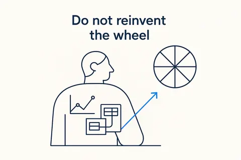
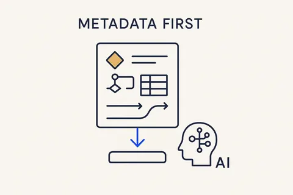
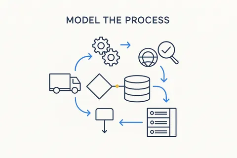
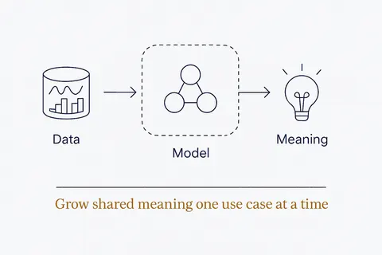
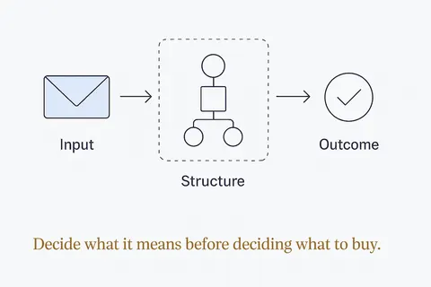
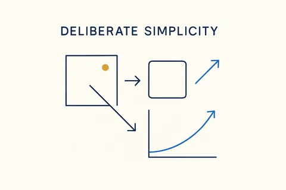

Building your own data models
Start from a proven industry model instead of a blank page: take the pattern, keep the fraction you need, add your own rules, and generate the database from it. 7 concepts; each opens its full page in its own library.
 Proven PatternsProven shapes you reach for instead of inventing — a pattern captures a repeatable solution (Data Vault, dimensional, temporal) so you compose from known-good parts.Breakthrough Modeling →
Proven PatternsProven shapes you reach for instead of inventing — a pattern captures a repeatable solution (Data Vault, dimensional, temporal) so you compose from known-good parts.Breakthrough Modeling →
Do Not Reinvent the WheelThe new way of modeling stands on the shoulders of giants — distil the essentials from decades of data-modeling work and keep what works, rather than starting from scratch.Breakthrough Modeling →
Metadata FirstMetadata is the material Breakthrough Modeling is built from — structure, logic and meaning captured as data, so the platform and the AI can both read and run it.Breakthrough Modeling →
Model the Process, Not Just the ModelModel not just the data model and the transformations, but the whole process — delivery, integration, migration, quality checking, the backroom — and how the system changes over time.Breakthrough Modeling →
Model the Meaning You NeedThe enterprise ontology that models everything ships nothing. Grow shared meaning one high-value use case at a time — and leave batch_id alone.Structure Beats Magic →
Meaning Before MechanismA semantic model is not a technology. The same meaning can ship as a graph, an API, a data product or a contract — decide what it means before deciding what to buy.Structure Beats Magic →
Deliberate SimplicityMake each part as plain as it can be without losing what matters — reuse only the fraction you actually need, and strip the rest.Breakthrough Modeling →The neighbourhood
How this connects
Everything on this topic → (use cases, articles, resources)
Other categories: Design thinking and small experiments · From proof of concept to something you rely on · Vibe coding practices that hold · Data, rules and structure first · Build, buy or rent · Privacy and control · Components and building blocks · The business OS